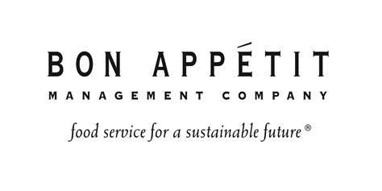

Work Experience

Student Coordinator at Bon Appetit
My journey with Bon Appétit at Willamette began as a Line Cook in March 2022, quickly advancing to the Catering Department within five months. Within a year, I stepped into a leadership role and soon after, I was promoted to Student Coordinator. In this role, I oversee the recruitment, interviewing, and scheduling processes, while maintaining and evaluating employee records to optimize staff efficiency for over 60 current employees. My rapid career growth, has really built my strong leadership capabilities, and commitment to operational excellence.

Assistant Kitchen Manager
Initially employed as a Full-Time Pizza Cook, later assuming the role of assistant Kitchen Manager at a farm stand food cart. My responsibilities included assisting in food preparation, operating a wood-fired pizza oven, managing schedules, supervising a team of workers, and playing a key role in menu development. Additionally, I was accountable for publicizing our offerings, maintaining inventory, ordering food supplies, handling various administrative tasks, safety compliance, organizing events, and overseeing catering services.